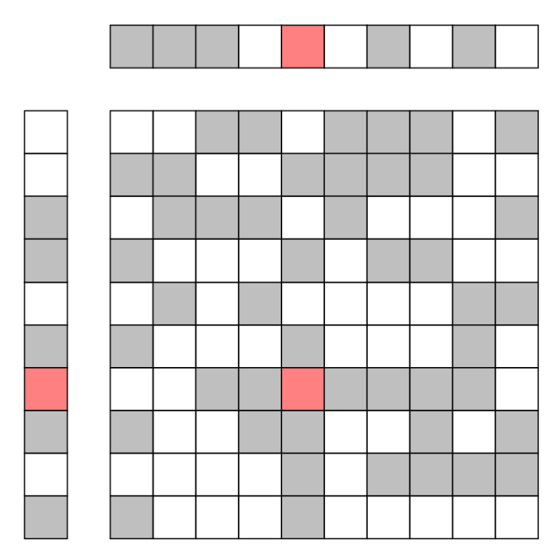
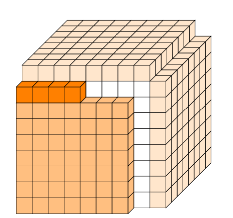
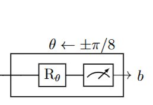
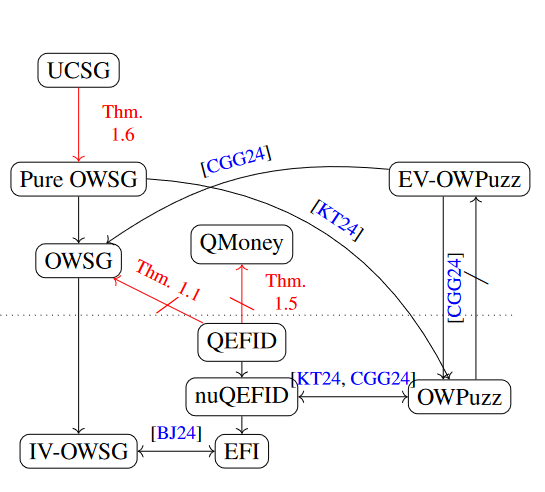
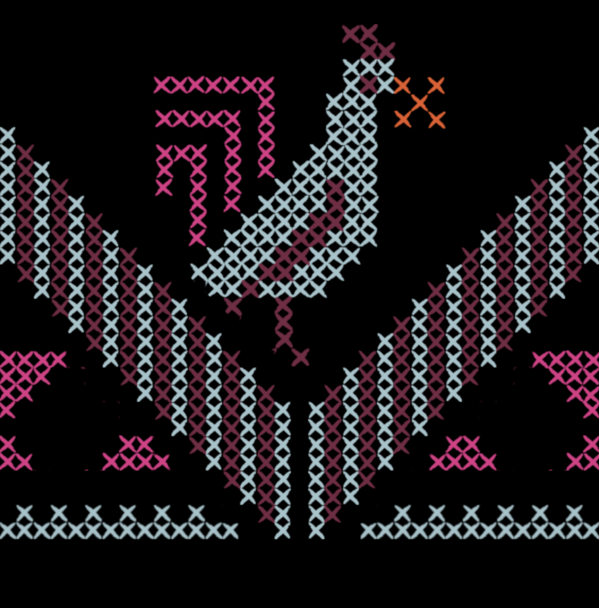

Advanced cryptographic solutions based on standard hardness assumptions are often far from practical. Fully homomorphic encryption is a striking example, but even simpler tools for private computation can impose prohibitive computation, communication, or storage costs. In this line of work, we seek practical solutions, even at the cost of relying on new hardness assumptions.... This leads to promising and highly efficient tools for secret-key private information retrieval (sk-PIR), enabling private access to remote data, and encrypted matrix-vector products (EMVP), with applications to private AI inference. Our constructions rely on learning subspace with noise (LSN) assumptions, which postulate that samples drawn from a linear subspace look random when they are obfuscated with noise. more

Imagine an enormous computational task carried across multiple generations (e.g the mathematical corpus produced by humanity or, simply, a ledger of some blockchain). Is it possible to quickly verify that the current generation’s computation state is correct?... Using a traditional probabilistically checkable proof (PCP), it is possible to encode computations so that at any later point one can quickly verify their correctness. However, adding a new step in the computation requires regenerating the encoding from scratch. We introduce tree PCPs: these are PCPs that can be incrementally generated, one step at a time, and quickly verified at any point along the way. Analogously to standard PCPs that build on locally testable codes, tree PCPs build on our new notion of locally testable tree codes, which allows information to be incrementally encoded, while efficiently tested for corruption. more

A proof of quantumness (PoQ) is an experiment for testing if a computer device is quantum. We design PoQ experiments that are sound as long as the device is not too big, i.e. bounded in space. The experiment can be carried out by an efficient classical tester and, unlike existing PoQs, does not rely on cryptographic assumptions.

A rich theory of cryptography has put forth various cryptographic primitives and hardness notions. A central goal is to understand the relationships among these primitives through their black-box complexity: which primitives can, or cannot, be built from simpler ones?... My work addresses instances of this question in both classical and quantum cryptography. In the classical setting, it investigates the relationship between correlation intractability (a notion central to non-interactive proof systems) and fundamental primitives such as one-way functions and collision-resistant hash. In the quantum setting, it seeks to untangle the relationship between two minimal notions of hardness: pseudorandomness and one-wayness, which are classically equivalent. more

A central goal in modern cryptography is to understand which advanced cryptographic tasks can be built from standard hardness assumptions, and how efficiently they can be realized: what does it take to compute a function over private inputs, or prove knowledge of a secret?... My earlier work establishes new feasibility and asymptotic efficiency results for central problems in private computation (e.g. private information retrieval, oblivious transfer and oblivious RAM) and proof systems (non-interactive zero knowledge). Some of these results resolve decades-old open questions and introduce techniques that have since found broader applications. more
Tatreez is a prominent form of traditional Palestinian embroidery. In this project, we look into the beautiful geometry in tatreez and build an algorithm that generates original tatreez pieces. At every run... of the algorithm, a fresh random peice is produced, where different shapes and new patterns appear. The algorithm thus gives birth to a never-ending collection of unique tatreez pieces; some traditional-looking, some rather quirky, but all unpredictable! more
